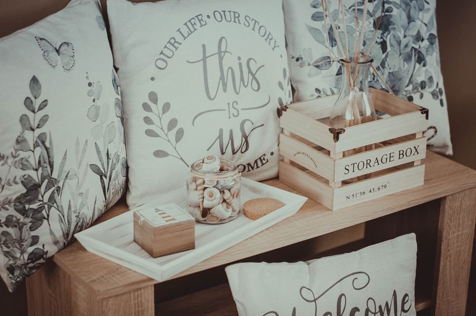

Formas de aprovechar las cajas multifunción para maximizar el espacio en tu hogar
Cuando hablamos de organizadores de multifunción en espacios pequeños, estamos hablando de esos productos que sirven para múltiples propósitos y pueden adaptarse a diferentes necesidades. Las cajas multifunción son una excelente opción para aquellos que buscan maximizar el uso de sus espacios limitados. En este artículo, te mostraremos cinco formas prácticas y efectivas de utilizar estas cajas en espacios reducidos, desde guardar objetos electrónicos hasta decorar tu espacio.

Photo: Nika Benedictova / Pexels
1. Almacenamiento de cables y enchufes
Las cajas multifunción con divisas internas pueden ser ideales para ordenar cables de computadoras, teléfonos móviles, cámaras y otros dispositivos electrónicos. Para evitar un caos de cables, coloca una caja de este tipo en un rincón de tu escritorio o cerca de la televisión. Puedes etiquetar las divisiones con marcadores de color para que te sea fácil encontrar el cable que necesitas.
Ejemplo práctico: Imagina que tienes un escritorio en tu pequeño estudio. Puedes comprar una caja multifunción con cinco compartimientos y etiquetarlos con colores: uno para el cable de la impresora, otro para el cargador del teléfono, uno para el cable del teclado, uno para el cargador de la cámara y un último para otros cables. Esta organización no solo evita que los cables se enreden, sino que también te permite encontrarlos rápidamente.
2. Guardar libros y revistas
Las cajas multifunción también pueden ser perfectas para organizar libros y revistas. Puedes elegir cajas con divisiones pequeñas y colocarlas en estanterías o en el suelo. Esto no solo liberará espacio en tu escritorio, sino que también te permitirá encontrar fácilmente los libros que necesitas.
Ejemplo práctico: En un hogar con niños, las cajas multifunción pueden ser utilizadas para guardar libros de cuentos y juegos educativos. Se pueden colocar en el suelo, cerca de la cama, para que los niños puedan tener fácil acceso a ellos. Además, puedes combinar las cajas con estantes superpuestos para guardar libros más grandes o colecciones de revistas.
3. Organizar joyería y accesorios
Las cajas multifunción también pueden ser utilizadas para organizar joyería y otros accesorios. Puedes comprar cajas de diferentes tamaños y colores, y asignar cada una a un tipo de accesorio. Por ejemplo, puedes tener una caja para pendientes, otra para collares y otra para pulseras.
Ejemplo práctico: En una habitación de baño, puedes utilizar cajas multifunción para almacenar pulseras y collares. Colocar una caja en cada esquina del área de la mesita de noche puede resultar muy útil. Cada caja puede ser etiquetada con el tipo de joya que contiene, lo que facilita el proceso de armado y desarmado.
4. Guardar objetos de arte
Las cajas multifunción son excelentes para almacenar objetos de arte. Puedes tener cajas con divisiones suficientes para mantener tus fotografías, pinturas y otros objetos pequeños a salvo. También puedes usar cajas con divisas más grandes para guardar molduras y marcos de fotos.
Ejemplo práctico: En un hogar con un pequeño estudio de arte, una caja multifunción con múltiples divisiones puede ser ideal para guardar cuadros, cuadernos de dibujo y pinceles. También puedes usar cajas más grandes para almacenar molduras y marcos de fotos. Esto no solo protege tus objetos, sino que también te ayuda a encontrarlos rápidamente.
5. Decorar con cajas multifunción
Las cajas multifunción no solo sirven para almacenar objetos, sino que también pueden ser utilizadas para darle un toque decorativo a tu espacio. Puedes pintarlas o adornarlas con etiquetas y stickers para crear un espacio único y organizado.
Ejemplo práctico: En una habitación de dormitorio, puedes colocar cajas multifunción en una estantería o en el suelo para almacenar objetos personales. Pintándolas de colores alegres o decorándolas con stickers de animales o flores, puedes crear un espacio acogedor y organizado. Además, puedes combinar las cajas con plantas para agregar un toque natural a la decoración.
En resumen, las cajas multifunción son una excelente solución para optimizar el espacio en tu hogar. Utiliza estas ideas para organizar cables, libros, joyería, objetos de arte y hasta para decorar tu espacio. Con un poco de creatividad y organización, puedes mantener tu hogar en orden sin necesidad de grandes cambios.